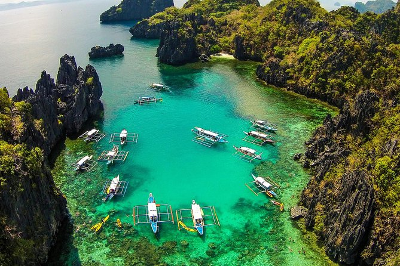
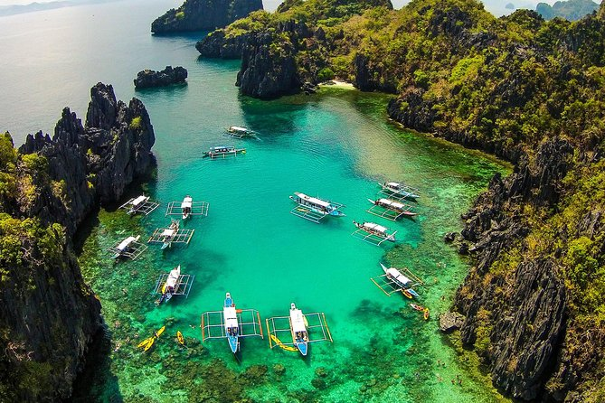
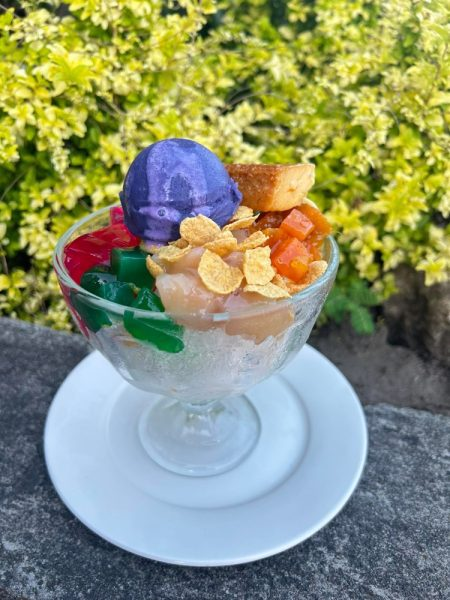
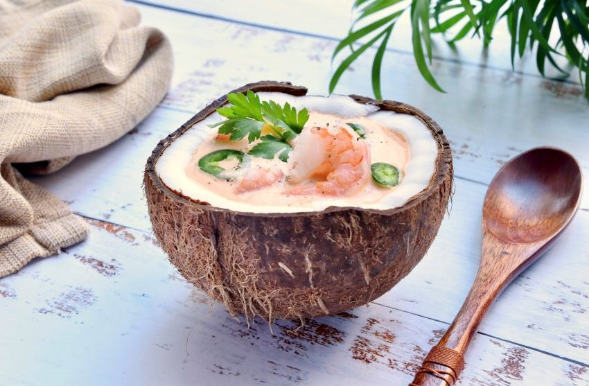
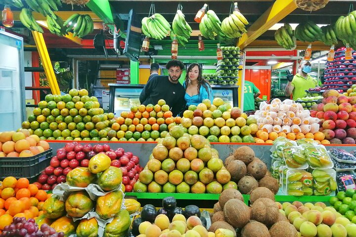
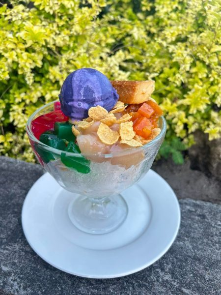
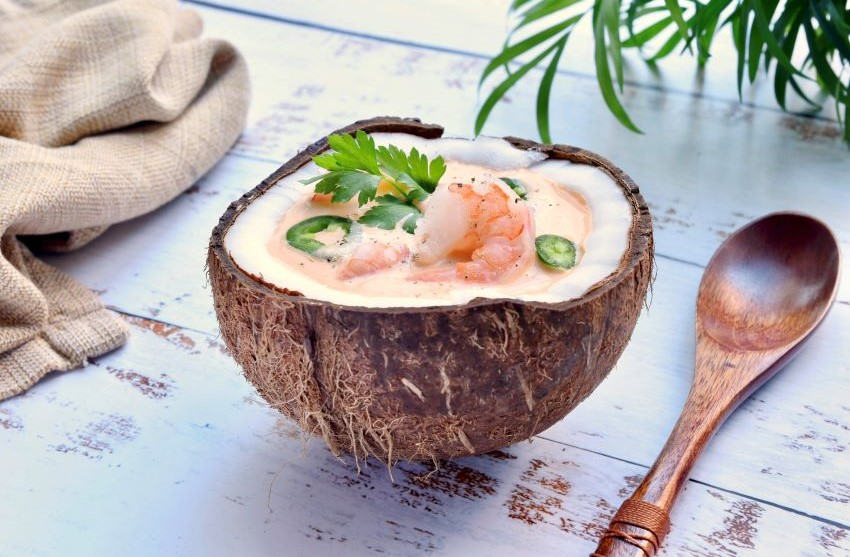
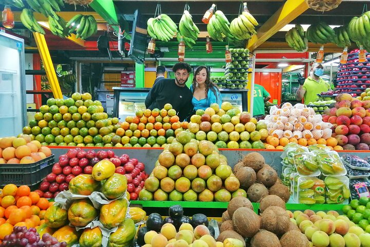
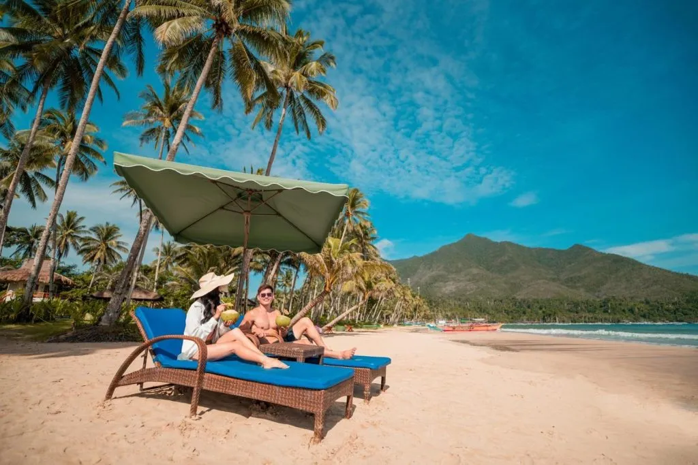
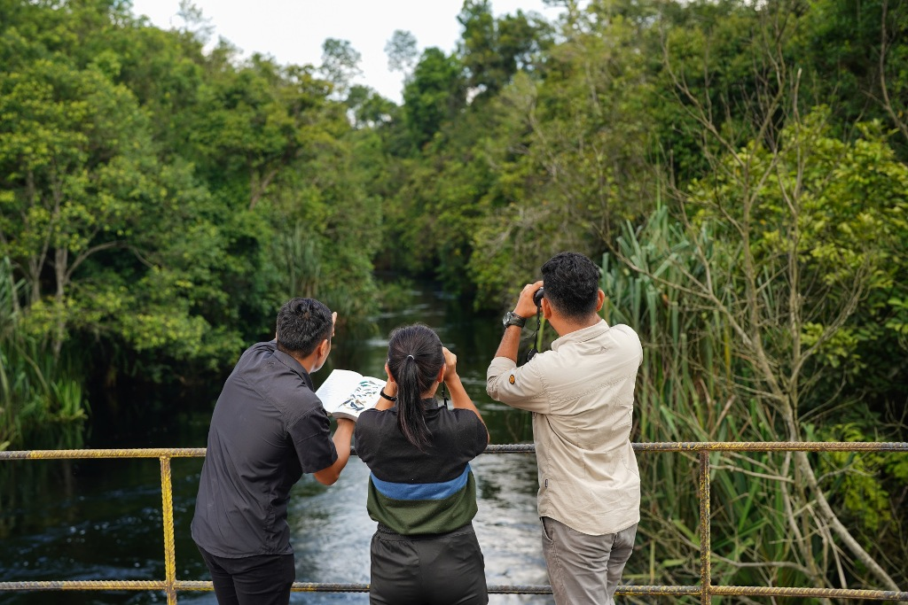

Explore a world of adventure, culture, and relaxation in MIMAROPA. From diving in crystal-clear waters to savoring local delicacies, there's something for every traveler. Dive into our curated activities and make unforgettable memories!
🏄 Adventure
 



- Scuba diving in El Nido's lagoons
- Island hopping in Palawan
- Trekking in Mount Halcon
- Zipline adventures in Mindoro
🍲 Food
 





- Taste fresh seafood in Palawan
- Try halo-halo in Marinduque
- Sample coconut-based dishes
- Visit local markets for exotic fruits
🌿 Nature & Relaxation




- Relax on pristine beaches
- Birdwatching in forest reserves
- Spa treatments with natural ingredients
- Stargazing in clear night skies